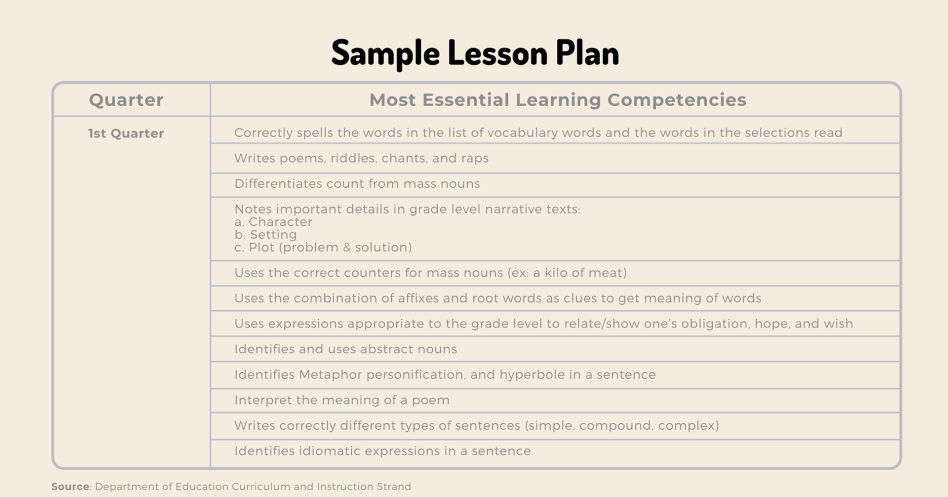
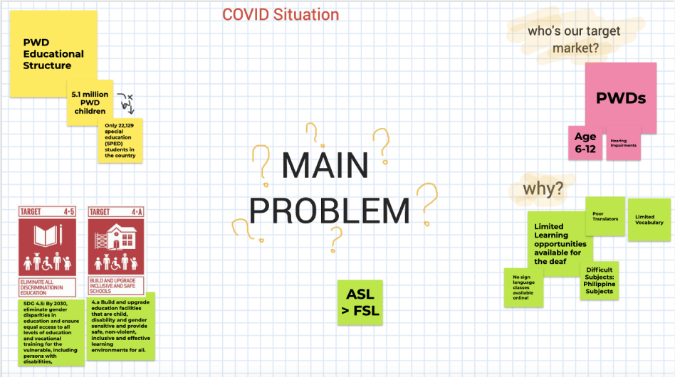
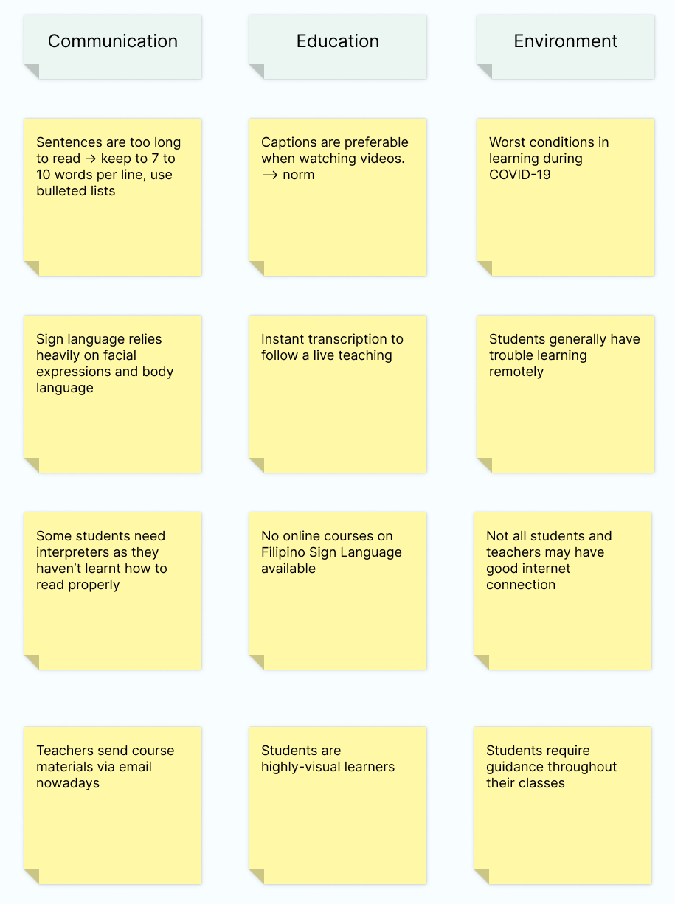
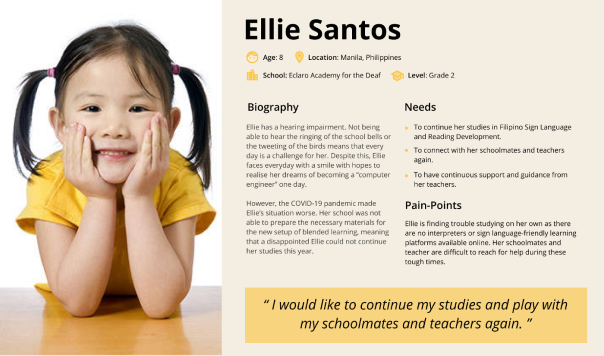

WHAT IS STABLE?
STABLE (Students who are ABLE) is the first-ever adaptive learning management system for hearing-impaired primary students (aged 6–12 years old) in the world. The LMS aims to provide a seamless and intuitive online learning experience for children and teachers in the Philippines.
My Team
Me
2 Animators
2 Research Analysts
1 Business Analyst
Duration
Built over 3 days Oct 29 - Oct 31
Key Methods
User Research
Remote User Interviews
Persona
Affinity Mapping
Wireframing
Overall, our team was awarded the top 2 out of 300 global teams in the Digital Inclusion Challenge 2020.
View the final prototype
Objective
To develop an adaptive learning management system for hearing-impaired children (aged 6–12 years old) in the Philippines and alleviate the education system for the SPED community.
Final Prototype
The Problem
As of today,
248,000
children with hearing impairements in the Philippines
Due to COVID-19,
0.2% of 37,200
enrolled in school where most schools lack necessary tools for online PWD learning*
*To add to this, PWD learning in the Philippines is underdeveloped and there are limited options for online learning for the deaf. Thus, there is a very real chance that the dreams of an entire generation of hearing-impaired learners may be lost if nothing is done.
Project Kickoff
The first 4 days were dedicated to defining the problem, the target users, and strategies.
Before beginning the entire process, we started off by conducting research on the current learning curriculum and methods used by specialized teachers to teach the children in the Philippines.

We tried to look for similar learning platforms online that cater to this community.
In the end, our team has confirmed that there are tools to supplement these platforms (voice-to-text recognition, etc) but still no existing platform as such online. We also identified the reasons why such a tool still does not exist.

User Research
Despite the tight deadline, my teammates and I managed to conduct remote user interviews with 2 main stakeholders to identify the needs and struggles of teachers and the hearing impaired. We asked certain questions like:
For Hearing-Impaired Students (conducted using Sign Language):
How would you describe your ideal teacher? What are the daily struggles you find most annoying? Suppose you are watching a video, is it more convenient to have the dialogues signed or captioned? Are there any mobile applications you find most difficult to use? What about it?
For Special Education Development (SPED) Teachers:
Do you have a reward system for these students? What difficulties do students face while learning remotely (esp during COVID-19)? If you were to create an app to teach the children, what functionalities would you add? Have you ever used any web or mobile apps to assist your teaching delivery?
User Interview
Through conducting remote user interviews with SPED professors, instructors, and students, we managed to identify the key needs and struggles of the hard of hearing community as well as the current trends in Sign Language.
“Filipino Sign Language is the new norm. American Sign Language has become a traditional way of communicating in the Philippines.” — SPED Professor
“Visual aids help us understand words and phrases more such as pictures and emojis.”
— Student
Understanding our User
Using an affinity diagram, we were able to identify the general scope of the project based on the responses of the user interviews and on our research. This helped me find the right direction in beginning the design process.

Persona

We created a user persona to represent our hearing-impaired child users. I used this persona as a direction to meet the primary users’ needs throughout the design process.